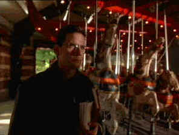

| Spanish Prisoner,The/B+,A- |
| Columbia-Tristar/1998/110m/ANA,WS 1.85,FS 1.33 |
All of the avarice revolves around a mysterious formula developed by Joe Ross, an employee of the company. At a Caribbean Island meeting of the financial backers of "the formula," we are introduced to all the players in the game. Ross is befriended by the mysterious high flyer Jimmy Dell and ditzy company secretary Susan Ricci attaches ingratiates herself to Ross. In New York, the Caribbean connections peel for Ross like the layers of an onion. Before the details of the con are revealed, Ross will find himself being played with at the merry-go-round in Central Park, Boston’s Logan Airport, various other New York City locales.
 |
|
Joe Ross is caught on a merry-go-round.©Columbia-Tristar |
The actors are very well cast. Campbell
Scott walks the swinging tightrope as Joe Ross, never quite sure what’s going or who to trust.
Steve Martin as Jimmy Dell works magic with the Mamet dialogue using the language to keep Joe Ross
off kilter. Rebecca Pidgeon (Mrs. David Mamet) plays Susan Ricci with wide-eyed innocence skewed by
a pronounced diabolic edge. Ben Gazarra has some nice moments as Corporation CEO Klein The clipped
patterns of dialogue may make the uninitiated Mametians ill at ease. Personally, I like more fluid
delivery of those short, terse sentences than the director permits his actors in The Spanish
Prisoner. But the director carries out the writer’s style with a sense of purpose.
The Spanish Prisoner is an elegant production. Carter Burwell’s
(Fargo) sly, slightly playful score, with a scent of the Orient in its rhythms, goes a long
way to embellishing The Spanish Prisoner with mystery. The photography by Gabriel Beristain
captures the locales in the same breezy way that Burwell’s music marries to the spirit of the
film. And director Mamet moves the action quickly, efficiently, and with evident delight.
The Spanish Prisoner is the kind of film that grows on you. The
more familiar you become with the scam, the more carefully you can appreciate the details of the
set-up. The holes don’t go away, but they become less important as shares the delight of author
Mamet’s devious imagination.
In keeping suave nature of The Spanish Prisoner, the DVD is an
effortlessly elegant presentation. This is a very film-like disc with sharp images, colors that are
not overly saturated, and virtually no NTSC artifacts. The night scenes on the Island are very nice
indeed. Nice lighting balances, deep black with excellent detail. The Dolby Digital 2-channel adds
enough surround ambiance for a full home theater experience. The music sounds great and the
dialogue, the all-important dialogue, is very cleanly delivered. A minor note: chapter five is
incorrectly labeled Jimmy Bell.

Selections from the feature archive include articles on Akira Kurosawa,
Frank Darabont, Blonde Bimbos, Hollywood
Street Gangs, or Vietnam:
The Hollywood Pariah, and many more....
Catch the Hollywood take on Blonde Bimbos by clicking on the
image above.

 Brad Lang continues to add more interesting material to the extensive
collection at Classic
Movies. Everything from actors and actress to your favorite directors is
linked at the site.
Brad Lang continues to add more interesting material to the extensive
collection at Classic
Movies. Everything from actors and actress to your favorite directors is
linked at the site.
 Direct from the corridors of the Home Theater Forum, Home Theater Talk is the
newest place on the Net to discuss everything home theater. Friendly atmosphere and knowledgeable
folks are the secret ingredients.
Direct from the corridors of the Home Theater Forum, Home Theater Talk is the
newest place on the Net to discuss everything home theater. Friendly atmosphere and knowledgeable
folks are the secret ingredients.

The DVD Forum is an international association of hardware
manufacturers, software firms and other users of Digital Versatile Discs (the "DVD
Format"), created for the purpose of exchanging and disseminating ideas and information about
the DVD Format and its technical capabilities, improvements and innovations.

A vast reservoir of DVD information, reviews, the kitchen sink. Check
out their huge DVD database including reviews from many sites.

The Movie Poster Archive includes extensive poster images from the films of stars like Susan Hayward, Kirk Douglas, Katharine Hepburn and many more. Our featured star is Susan Hayward